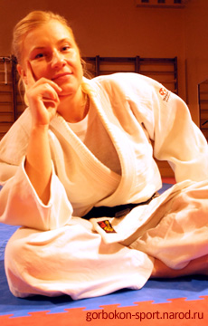

Горбоконь Анна Петровна,
дата рождения
17 октября 1986 г., незамужем.
ОБРАЗОВАНИЕ
- Школа "Юный Спартаковец".
- Киевский Национальный торгово-экономический университет.
- Киевский национальный университет физического воспитания и спорта, повышение квалификации.
ОПЫТ РАБОТЫ
2002-2004 -Член Сборной Украины по дзюдо,
2003-2005 - Член Сборной Украины по самбо,
2005 -Клуб "УСИН" -тренер- инструктор,
2005- спортивный центр школа "Олимп" Тренер -инструктор по фитнесу.
ЗВАНИЯ
- Мастер спорта Украины по дзюдо (присвоено 10.04.02),
- Мастер спорта Украины по самбо (присвоено 25.11.03),
В 2003 г Федерация дзюдо Украины Присвоила 2(второй) Дан по дзюдо.
ДОСТИЖЕНИЯ
-Чемпионка Мира по самбо,
-Чемпионка Европы по самбо,
-Чемпионка Украины по дзюдо.
-Чемпионка Украины по самбо.
МОИ ТРЕНЕРЫ
-Заслуженный тренер Украины Дуброва С.В. ,
-Заслуженный тренер Украины Дуброва В.В. ,
-Тренер высшей категории Чесебиев Б.М.
-Мастер спорта международного класса по дзюдо, Мастер спорта международного класса по самбо Горбоконь И.П.(мой родной брат) .
Дополнительная информация о международных соревнованиях и турнирах по дзюдо с сайта www.judoinside.com:
Anna Gorbokon